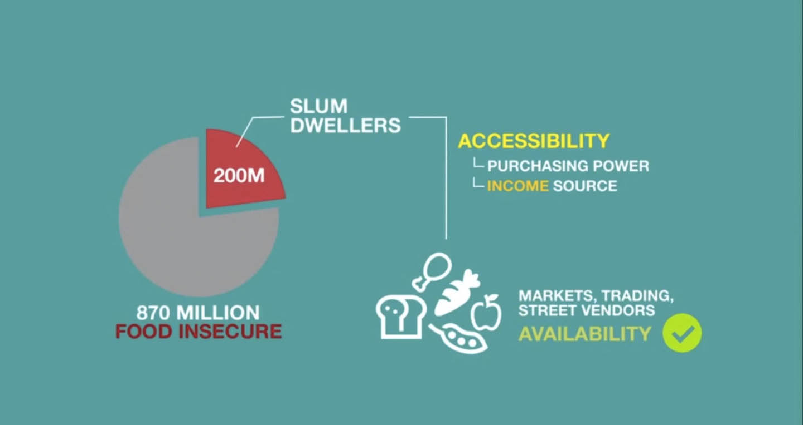
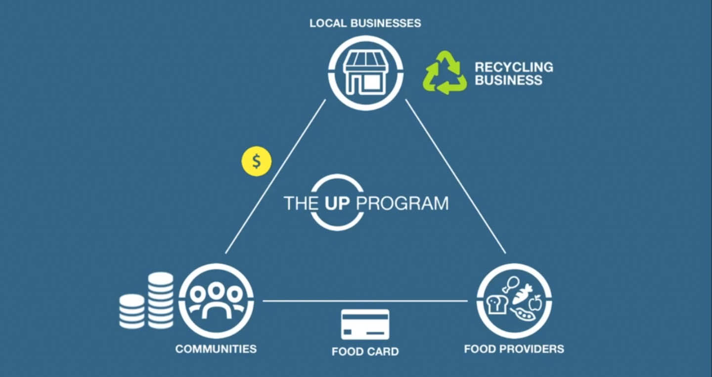

Business Design
The UP Program
The UP Program is a food security solution that provides slum communities direct access to nutritious food through a food card system. My team and I built this business model for Hult Prize 2013. The global food crisis was the theme of Hult Prize 2013 and the challenge was to provide food security to the 200 million people living in urban slum conditions. The UP Program made it to the Asia regional final and finished among the global top 10. This is a video I created for our online campaign using Keynote and Final Cut Pro X.

